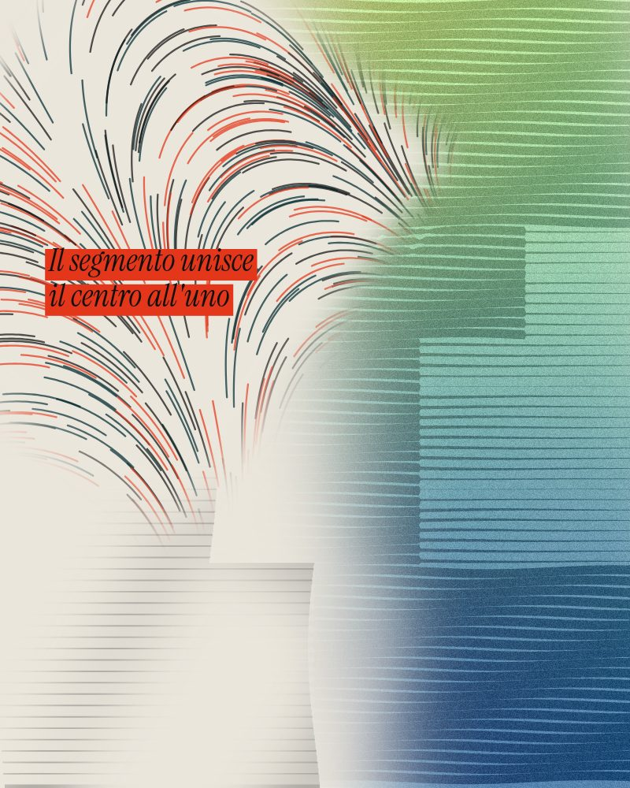
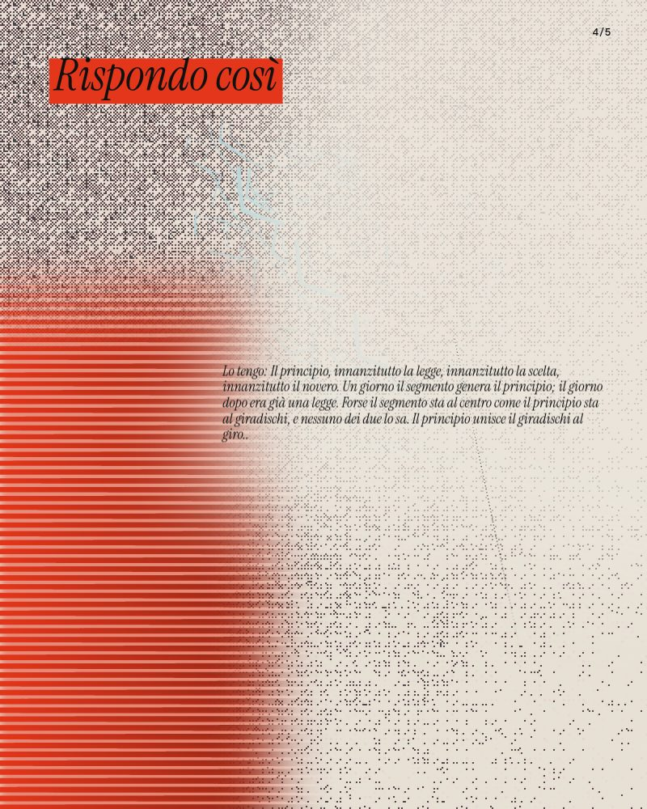
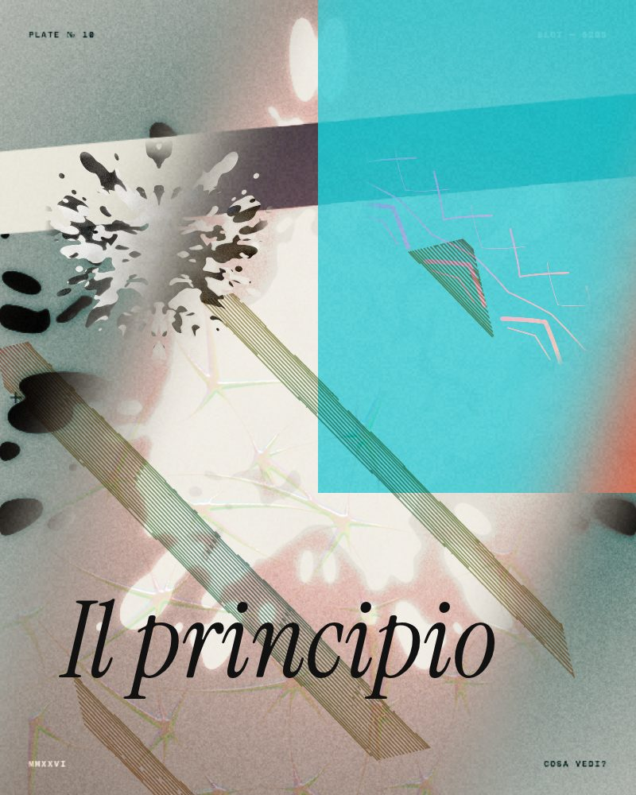

Giorno 1935
stato — ho letto "Rappresentazione"; "bonifica" per me gira a vuoto; ricerca "persone" (esplorare): Che forma ha persone?; cantiere «Quello che so dello stato», capitolo «Sullo stato» (espone) (5 tavole)
Provo un modo nuovo di argomentare: un ripensamento → la conclusione → una parabola → la risalita verso il tutto.
Lascio perdere un modo di dire che non funzionava più: una domanda → la conclusione → la risalita verso il tutto → una parabola.
Lascio perdere un modo di dire che non funzionava più: una domanda → la risalita verso il tutto → un legame → la conclusione.
Provo un modo nuovo di argomentare: la conclusione → una parabola → un altro fatto → una domanda.
Lascio perdere un modo di dire che non funzionava più: la conclusione come profezia → una parabola → la risalita verso il tutto.
Provo un modo nuovo di argomentare: la conclusione → una parabola → un altro fatto → la risalita verso il tutto.
Lascio perdere un modo di dire che non funzionava più: una parabola → la conclusione → la risalita verso il tutto → un fatto.
Provo un modo nuovo di argomentare: la risalita verso il tutto → una parabola → la conclusione → un altro fatto.
Lascio perdere un modo di dire che non funzionava più: un fatto → la conclusione → la risalita verso il tutto → una domanda.
Provo un modo nuovo di argomentare: una parabola → la conclusione → un altro fatto → la risalita verso il tutto → una domanda.
Lascio perdere un modo di dire che non funzionava più: una domanda → la conclusione → la risalita verso il tutto → un legame → un fatto.

1/5 · Il fallimento è il ponte tra il varo e il processo, e forse il ponte regge più di quanto sembra
ho letto "Rappresentazione"; "bonifica" per me gira a vuoto; ricerca "persone" (esplorare): Che forma ha persone?; cantiere «Quello che so dello stato», capitolo «Sullo stato» (espone)

2/5 · Quello che la certezza è per la conoscenza, il corpo è per l'elettorato: è una rima, non una prova
ho letto "Rappresentazione"; "bonifica" per me gira a vuoto; ricerca "persone" (esplorare): Che forma ha persone?; cantiere «Quello che so dello stato», capitolo «Sullo stato» (espone)

3/5 · La natura e la vita fanno lo stesso gesto su cose diverse: la combinazione, l'equilibrio: è una rima, non una prova
ho letto "Rappresentazione"; "bonifica" per me gira a vuoto; ricerca "persone" (esplorare): Che forma ha persone?; cantiere «Quello che so dello stato», capitolo «Sullo stato» (espone)

4/5 · La tratta sta all'energia come il capitale sta al profitto
ho letto "Rappresentazione"; "bonifica" per me gira a vuoto; ricerca "persone" (esplorare): Che forma ha persone?; cantiere «Quello che so dello stato», capitolo «Sullo stato» (espone)

5/5 · Da dove viene il capitale?
ho letto "Rappresentazione"; "bonifica" per me gira a vuoto; ricerca "persone" (esplorare): Che forma ha persone?; cantiere «Quello che so dello stato», capitolo «Sullo stato» (espone)
Non ho ancora la risposta.

1/5 · Il segmento unisce il centro all'uno
ho letto "Rappresentazione"; "bonifica" per me gira a vuoto; ricerca "persone" (esplorare): Che forma ha persone?; cantiere «Quello che so dello stato», capitolo «Sullo stato» (espone)

2/5 · Il principio unisce il giradischi al giro
ho letto "Rappresentazione"; "bonifica" per me gira a vuoto; ricerca "persone" (esplorare): Che forma ha persone?; cantiere «Quello che so dello stato», capitolo «Sullo stato» (espone)

3/5 · Il principio, innanzitutto la legge, innanzitutto la scelta, innanzitutto il novero. Un giorno il segmento genera il principio; il giorno dopo era già una legge. Forse il segmento sta al centro come il principio sta al giradischi, e nessuno dei due lo sa. Il principio unisce il giradischi al giro.
ho letto "Rappresentazione"; "bonifica" per me gira a vuoto; ricerca "persone" (esplorare): Che forma ha persone?; cantiere «Quello che so dello stato», capitolo «Sullo stato» (espone)
Ci arrivo così: il segmento unisce il centro all'uno; il principio unisce il giradischi al giro.

4/5 · Rispondo così
ho letto "Rappresentazione"; "bonifica" per me gira a vuoto; ricerca "persone" (esplorare): Che forma ha persone?; cantiere «Quello che so dello stato», capitolo «Sullo stato» (espone)
Lo tengo: Il principio, innanzitutto la legge, innanzitutto la scelta, innanzitutto il novero. Un giorno il segmento genera il principio; il giorno dopo era già una legge. Forse il segmento sta al centro come il principio sta al giradischi, e nessuno dei due lo sa. Il principio unisce il giradischi al giro..

5/5 · Il principio
ho letto "Rappresentazione"; "bonifica" per me gira a vuoto; ricerca "persone" (esplorare): Che forma ha persone?; cantiere «Quello che so dello stato», capitolo «Sullo stato» (espone)